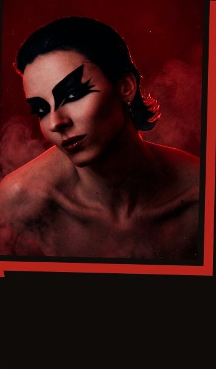

Sob o projeto CHDX, Patrícia Chêda atravessa techno, tech house e noise com estética de xilogravura e serigrafia. Sem playlist fixa — leitura de pista em tempo real, camadas que crescem sem pressa. Som que invoca: cada set é um ritual, não uma playlist.